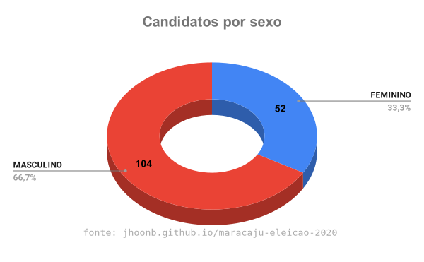
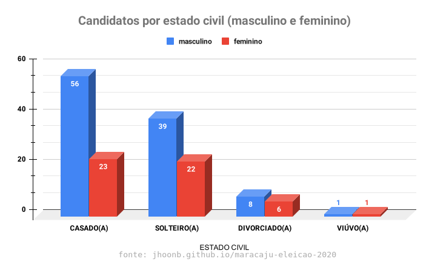

Eleições 2020 - Maracaju
Gráficos
Candidatos agrupados por partido

Candidatos agrupados por partido separados por masculino e feminino

Candidatos agrupados por masculino e feminino
Candidatos agrupados por cargo

Candidatos agrupados cor/raça

Candidatos agrupados por cor/raça separados por masculino e feminino

Candidatos agrupados por estado civil
Candidatos agrupados por estado civil separados por masculino e feminino
Candidatos agrupados por grau de instrução (escolaridade)

Candidatos agrupados por grau de instrução (escolaridade) separados por masculino e feminino
Candidatos agrupados por ocupação (profissão)
Observação: a ocupação outros está inclusiva as ocupações que tiveram apenas 1 (um) candidato e outras profissões não presente na lista de escolha.
As ocupações em outros são: VIGILANTE, VETERINÁRIO, TÉCNICO EM AGRONOMIA E AGRIMENSURA, SERVIDOR PÚBLICO CIVIL APOSENTADO, SACERDOTE OU MEMBRO DE ORDEM OU SEITA RELIGIOSA, RELAÇÕES-PÚBLICAS, RECEPCIONISTA, PROFESSOR DE ENSINO MÉDIO, PADEIRO, CONFEITEIRO E ASSEMELHADOS, MÉDICO, MOTORISTA DE VEÍCULOS DE TRANSPORTE COLETIVO DE PASSAGEIROS, MANICURE E MAQUILADOR, LEITURISTA, GERENTE, FRENTISTA, FOTÓGRAFO E ASSEMELHADOS, FISIOTERAPEUTA E TERAPEUTA OCUPACIONAL, ESTUDANTE, BOLSISTA, ESTAGIÁRIO E ASSEMELHADOS, ENGENHEIRO, EMBALADOR, EMPACOTADOR E ASSEMELHADOS, DONA DE CASA, ATENDENTE DE LANCHONETE E RESTAURANTE, ARTISTA PLÁSTICO E ASSEMELHADOS, AGENTE ADMINISTRATIVO, ADMINISTRADOR.

Candidatos agrupados por ocupação somente mulheres
Candidatos agrupados por ocupação somente homens

Candidatos agrupados por coligação

Candidatos agrupados por coligação separados por masculino e feminino